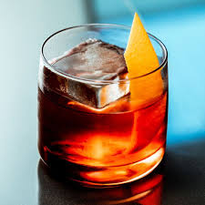

Boulevardier

Ingredients
- 3/2 oz bourbon or rye whiskey
- 1 oz Campari
- 1 oz sweet vermouth
Instructions
- Add all ingredients to a mixing glass with ice.
- Stir until well chilled.
- Strain into a rocks glass over fresh ice.
- Garnish with an orange peel.
← Back to Menu